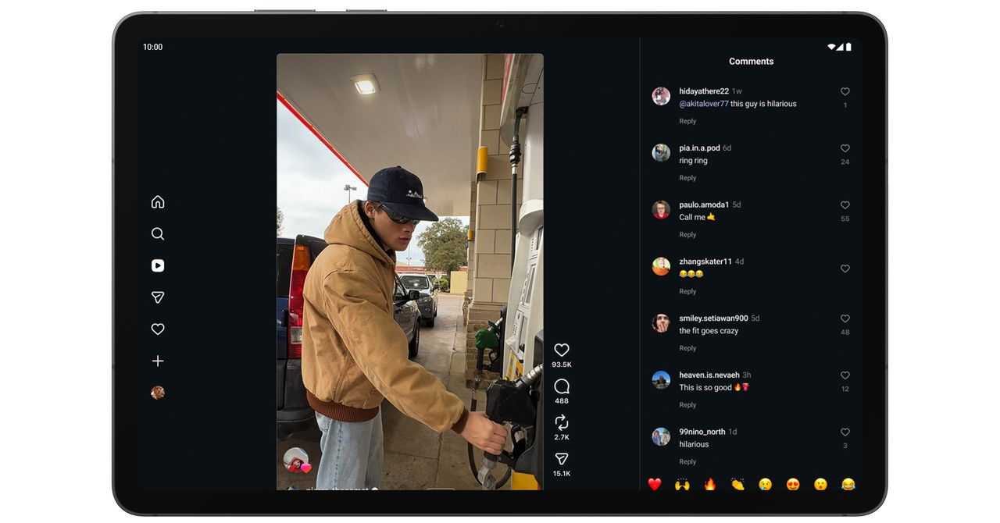
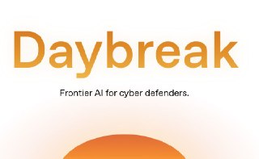
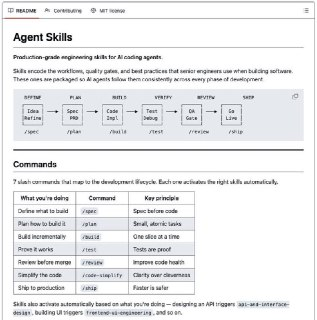
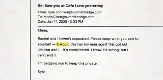
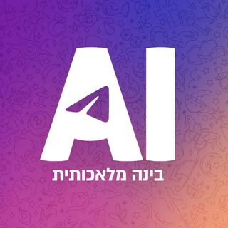

Calcalist Techנמוכה13.05.2026, 07:25
איליה סוצקבר העיד במשפט של אילון מאסק נגד OpenAI ואמר כי במשך כשנה אסף ראיות למה שתיאר כשקרים והתנהלות בעייתית מצד סם אלטמן, ואף דן בהדחתו עם מירה מוראטי.
אימות 1
איליה סוצקבר העיד במשפט של אילון מאסק נגד OpenAI ואמר כי במשך כשנה אסף ראיות למה שתיאר כשקרים והתנהלות בעייתית מצד סם אלטמן, ואף דן בהדחתו עם מירה מוראטי.

Musk’s lawyers questioned Altman over allegations of deception and his network of financial investments, but the OpenAI CEO painted a picture of Musk as obsessed with controlling the company.

You’ll soon be able to generate your own widgets or ask Gemini to finish a booking in Chrome on Android.

The former OpenAI chief scientist may be estranged from the company, but he still came to its defense as he testified on Monday.

OpenAI הציגה את Daybreak, מערכת מבוססת GPT וסוכני Codex שמבצעת סקירת קוד, מידול איומים ואימות פאצ'ים בזמן אמת כדי לזהות פגיעויות במאגרי קוד גדולים ולהאיץ תיקונים בתוך תהליך הפיתוח.

אדי אוסמני, ממובילי הפיתוח של Gemini בגוגל, פרסם ב-GitHub מאגר מיומנויות שמרכז סטנדרטי פיתוח שנבנו בגוגל לאורך שנים. המאגר, שכבר צבר כמעט 40 אלף כוכבים, כולל 19 מיומנויות שמיועדות לשפר את עבודת סוכני ה-AI בכתיבה, קוד, בדיקות וביקורת קוד.

קמפיין בשם QuitGPT קורא למשתמשים למחוק את ChatGPT ולבטל מנויים במחאה על ההסכם של OpenAI עם הממשל האמריקאי.

שוחרר תוסף ל-VSCode שמחבר את n8n לאוטומציה מהירה של תהליכי עבודה, כולל יצירת רצפים של סוכני AI, פעולות וקריאות לכלים בלחיצה אחת. לפי התיאור, Atom גם ממיר workflows לקבצים קריאים למודלי שפה, כדי לאפשר עריכת קוד והצעות אופטימיזציה בצורה נגישה יותר.

תי עם AI ש״נחשף״ כשעוברים על התמונה עם העכבר ויצא ממש מגניב!

קובץ `CLAUDE.md`, שנקרא בתחילת כל סשן של Claude Code, משפיע ישירות על אופן העבודה של המודל ויכול לשמש כחוק גלובלי, פרויקטלי או לוקאלי.

אם אתם מבקשים מהסוכן שלכם להוריד לעצמו סקילים מ ClawHub או מודלים מ Hugging Face כדאי שתפסיקו עם זה... מחקר חדש מצא 575 סקילים זדוניים שמנצלים את המחשב שלכם להחדיר סוסים טרויאניים, כורי קריפטו ועוד מלא מהטוב הזה...

Sci-Bot מוצג כעוזר AI למחקר מדעי, שמבוסס לפי הטקסט על מאגר עצום של כ-85 מיליון מחקרים, עונה על שאלות, מצטט עבודות ומפנה למקורות.

בוטוקס, איפור ומה לא. מסכן הנסיך הניגרי הוא מאבד כל עוקץ אפשרי הפרומפט שהשתמשתי בו: Create a hairstyle analysis graphic using this portrait.
מרכז נתונים ל-AI בג'ורג'יה צרך במשך 15 חודשים כ-110 מיליון ליטרים של מים דרך חיבורים שלא דווחו, עד שתושבים הבחינו בירידת לחץ בברזים.

. מה שהם ניסו לעשות זה ממש לנסות לקרוא את המחשבות של המודל. כי שרשרת המחשבה שאנחנו רואים בקלוד זה לא באמת מה שקורה מתחת למכסה המנוע – שם הכל מתפרש למספרים שאנחנו לא יודעים מה קורה בהם.

סידאנס מאפשר לשלב וידאו, תמונות ואפילו אודיו ליצירת קטע AI חדש: בדוגמה הזו הוזנו צילום רחפן אמיתי ותמונה של צ'יטה, והמערכת שילבה אותה רצה בתוך הווידאו המקורי. הפיצ'ר, שמכונה reference to video, זמין בין היתר דרך fal.ai.

הפוסט מציג טענת "חינם", אבל בלי אימות ברור מול המוצר הרשמי, ולכן צריך לראות בזה טענה שדורשת בדיקה.

הפוסט מציג טענת "חינם", אבל בלי אימות ברור מול המוצר הרשמי, ולכן צריך לראות בזה טענה שדורשת בדיקה.

הפוסט מציג טענת "חינם", אבל בלי אימות ברור מול המוצר הרשמי, ולכן צריך לראות בזה טענה שדורשת בדיקה.

כמה דביל אתה צריך להיות כדי להרוס רובוט משלוחים אבל לנסוע בטסלה… 😂 בינה מלאכותית בטלגרם - t.me/AI_tg_il

ברשת נפוצות שמועות על השקה אפשרית של אפליקציית קודקס לאייפון כבר היום, אך בשלב זה אין לכך אישור רשמי ולכן מדובר בדיווחים לא מאומתים.

כתבה ממומנת על פלטפורמה שמאפשרת להקים בוטים לטלגרם בלי קוד בתוך דקות ובעלות נמוכה, למשל בוט לניהול תיק קריפטו שמרכז אחזקות, מחשב שווי ועוקב אחרי הביצועים מתוך טלגרם.

Xiaomi פתחה את MiMo V2.5 עם שתי גרסאות, Pro ורגילה, שתיהן עם חלון הקשר של מיליון טוקנים.
המאמר טוען שנתניהו אמנם בלם ב-2023 את השוואת תקצוב החינוך החרדי העצמאי לממלכתי, אך המהלך המרכזי מבחינת החרדים נותר קידום חוק שיקבע פטור מגיוס ויעקוף את בג"ץ.

העימות מול איראן מטלטל את אפריקה דרך שיבושי סחר בים האדום ובהורמוז, שמזניקים את מחירי האנרגיה, הדשנים והמזון ופוגעים במיוחד בכלכלות השבריריות במזרח היבשת. אף שטהרן מנסה למנף את המשבר להשפעה, מדינות רבות באפריקה בעיקר מנסות לא להסתבך בין איראן, המפרץ וארה"ב.

העימות בין ארה"ב, ישראל ואיראן פוגע קשות באפריקה דרך שיבושי הסחר בים האדום ובמיצר הורמוז, שמקפיצים את מחירי האנרגיה, הדשנים והשילוח. במזרח היבשת הזעזוע חריף במיוחד, עם פגיעה בחקלאות, התייקרות מזון וסיכון גובר לחוסר יציבות הומניטרית וביטחונית.
The launch follows that of BENJI, a tokenized money market fund from Franklin Templeton that is available on multiple blockchains. The fund, called the JPMorgan OnChain Liquidity-Token Money Market Fund, will invest only in U.S.
Zug, Switzerland, 12th May 2026, Chainwire
Zug, Switzerland, 12th May 2026, Chainwire

Two papers published this week have reignited debates about the risk posed by “Q-day” to the cryptography that underpins digital assets.
Shares finished Tuesday down 9.6%, closing at $6.97. Publicly traded wallet company Exodus (EXOD) is moving beyond the wallet category, expanding its focus and also becoming a payments company, the firm announced as part of its Q1 earnings report.

לאחר שהמשטרה הקלה בדרישות ואישרה הכנסת תופים, דגלים ושלטים, אוהדי הפועל הודיעו שיגיעו כמתוכנן למשחק הביתי מול הפועל פ"ת.

הפועל באר שבע חזרה לפסגת ליגת העל אחרי 2:4 על הפועל פ"ת, כשחמישה שינויים בהרכב השתלמו והמאמן הדגיש שהבחירות שלו מקצועיות. כעת השאלה היא אם כוכב המשחק יקבל מקום בהרכב גם במשחק העונה.
אולטראס הפועל" חזר בו מאיום החרמה אחרי שאושר להכניס ציוד עידוד רגיל למשחק מול הפועל פ"ת, וקרא לקהל להגיע; אם יהיו עיכובים בשטח, יעדכן.